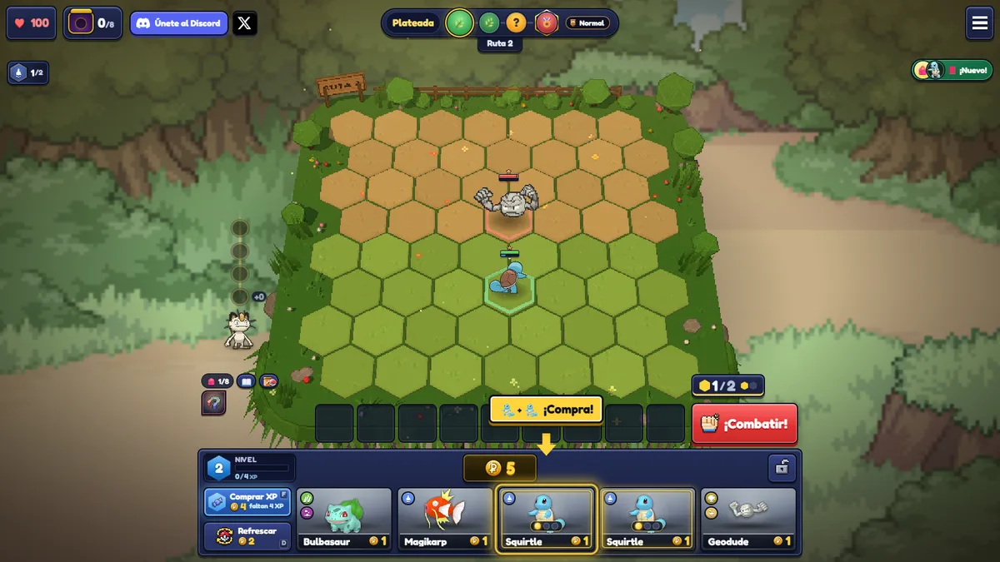
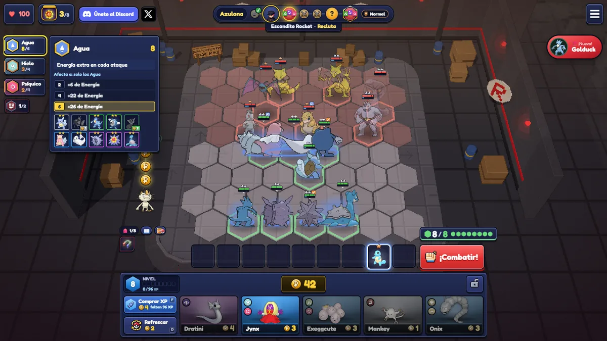
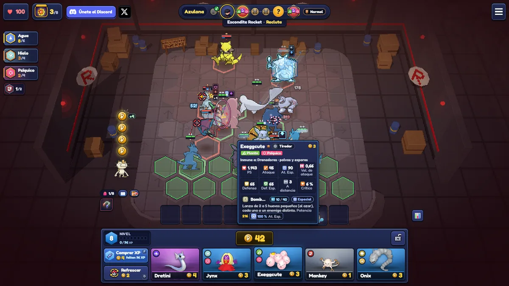

포켓몬 칸토 택틱스 시작 방법 총정리, 상점·이자·시너지
칸토 택틱스는 상점에서 포켓몬을 사 모아 팀을 짜면 알아서 싸워 주는 무료 브라우저 오토배틀러이고, 처음에는 '골드 아끼기, 같은 포켓몬 3장 모으기, 타입 맞추기' 이 세 가지 흐름만 잡아도 시작이 쉬워져요.
'포켓몬 롤토체스'로 검색해서 오신 분도 계실 텐데요, 롤토체스(TFT)와는 별개의 게임이라 이 글은 칸토 택틱스만 다뤄요. 그리고 직접 플레이한 후기는 아니고, 제작자 Einoow가 2026년 10월 23일에 올린 초보자 가이드를 바탕으로 처음 하시는 분께 필요한 순서대로 정리했답니다.
소개 페이지 대표 이미지예요. 테이블 위 몬스터볼 세 개 뒤로 이상해씨(Bulbasaur)·파이리(Charmander)·꼬부기(Squirtle)가 서 있어요.
이미지 출처: Einoow(einoow.com), 칸토 택틱스 소개 페이지 · 네이버 본문엔 받아서 재업로드 권장
칸토 택틱스는 어떤 게임이고 어디서 하나요
칸토 택틱스는 Einoow가 만든 포켓몬 소재의 무료 브라우저 게임이라서, 제작자 사이트의 소개 페이지에서 'Play Kanto Tactics' 버튼을 눌러 들어가요.
소개 페이지를 열고 그 버튼을 누르면 플레이 페이지로 넘어가는 구조예요. 1인 개발에 AI 어시스턴트와 협업하는 방식으로 만들었다고 개발기에 적혀 있고요, 2026년 10월 초에 나왔어요. 캠페인 말고도 배틀타워와 온라인 대전이 있고, 개발기에는 친구방과 랭크 시즌도 추가됐다고 나와요. 제작자 말로는 첫 몇 주 사이 캠페인 랭킹에 오른 플레이어가 7,000명을 넘었다는데, 이건 제작자 본인이 밝힌 수치예요. 닌텐도나 포켓몬 쪽 고지 문구는 제작자 페이지에 따로 적혀 있지 않아요.
상점과 골드, 이자는 어떻게 돌아가나요
매 라운드 상점에 포켓몬 5마리가 나오고, 보유 골드 10개당 1골드씩(최대 5골드) 이자가 붙기 때문에 골드를 언제 쓰느냐가 이 게임의 핵심이에요.

첫 라운드 화면이에요. 아래쪽 상점에 5마리가 나와 있고, 가운데에 보유 골드 5가 보여요.
이미지 출처: Einoow(einoow.com), 칸토 택틱스 초보자 가이드 · 네이버 본문엔 받아서 재업로드 권장
상점에서 산 포켓몬은 하단 줄(벤치)에 들어가고, 그걸 보드로 끌어다 놓아야 전투에 나가요. 위 화면에서는 같은 꼬부기(Squirtle) 두 마리에 노란 표시가 붙어 있는데요, 제작자도 한 종류씩 사기보다 같은 포켓몬을 겹쳐 사라고 권해요. 골드 쓰임새는 아래 표에 모아 뒀어요.
| 항목 | 내용 |
|---|---|
| 포켓몬 구매 | 1~5골드, 비쌀수록 강한 포켓몬 |
| 상점 새로고침 | 2골드, 5마리를 새로 뽑아요 |
| 상점 잠금 | 다음 라운드까지 지금 상점을 그대로 유지 |
| XP 구매 | 4골드, 레벨을 올리는 데 써요 |
| 이자 | 보유 10골드당 +1, 최대 +5 (50골드 보유 시) |
골드, 이럴 땐 이렇게
· 평소에는 저축: 10골드 단위로 이자가 붙고 50골드까지 +5가 되니까 쌓아 둘수록 유리해요.
· 강한 상대가 다가올 때는 몰아 쓰기: 그 판을 못 버티면 체력이 줄어서 이자보다 눈앞의 전력이 먼저예요.
· 체력이 낮을 때는 이자를 잊고 몰아 쓰기: 체력이 0이 되면 그 도전이 끝나거든요.
레벨·성급·시너지·배치는 어떻게 잡나요
레벨은 보드에 내보낼 수 있는 마릿수와 같고(레벨 2는 2마리, 레벨 8은 8마리), 같은 포켓몬 3장이 모이면 자동으로 2성이 돼요.
레벨은 시간이 지나면 오르고 XP를 사서 올릴 수도 있는데요, 제작자는 약한 포켓몬 여럿이 강한 소수보다 대체로 낫다고 해요. 2성 3장이 모이면 3성이 되고, 많은 포켓몬이 성급이 오르면서 진화해요. 예시로는 고라파덕(Psyduck) 3마리를 모으면 골덕(Golduck)이 되는 경우가 나와요.
시너지는 같은 타입 포켓몬을 여럿 모을수록 효과가 커져요. 포켓몬마다 타입이 1~2개 있고, 화면 왼쪽 패널에 지금 몇 마리인지와 다음 단계까지 몇 마리가 더 필요한지가 나와요. 타입을 눌러 보면 상세 설명이 열리는데요, 처음엔 여기부터 읽어 보시는 게 좋아요. 예시로 나온 물 타입은 이렇게 올라가요.
| 물 타입 포켓몬 수 | 공격할 때마다 추가되는 에너지 |
|---|---|
| 2마리 | +6 |
| 4마리 | +22 |
| 6마리 | +26 |

왼쪽 위에 물(Agua) 시너지 패널이 펼쳐진 화면이에요. 8/6으로 적혀 있어서 6마리 기준 단계를 넘긴 상태로 보여요.
이미지 출처: Einoow(einoow.com), 칸토 택틱스 초보자 가이드 · 네이버 본문엔 받아서 재업로드 권장
같은 화면 왼쪽에는 얼음(Hielo)과 에스퍼(Psíquico) 칸도 보여서, 여러 타입이 한꺼번에 집계된다는 걸 알 수 있어요.
배치는 앞줄에 탱커, 뒷줄에 원거리와 약한 유닛이에요. 앞줄 예시로 나온 건 꼬마돌(Geodude)·롱스톤(Onix)·알통몬(Machop)이고, 뒷줄 예시는 캐이시(Abra)·별가사리(Staryu)예요. 한쪽이 계속 뚫린다면 그쪽으로 가장 튼튼한 포켓몬을 옮기라고 해요.
캠페인은 어디가 어렵고, 아이템은 어떻게 쓰나요
캠페인에서 제작자 데이터상 가장 어려운 구간은 포켓몬타워의 텅구리 유령(Marowak's Ghost)이고, 승률이 17%예요.
캠페인은 칸토 체육관 8곳과 사천왕, 챔피언으로 이어지고, 일부 체육관은 고를 수 있거나 순서를 정할 수 있어요. 패배할 때마다 체력이 줄어서 0이 되면 그 도전이 끝나요. 전투 중에는 포켓몬을 눌러 능력치와 스킬을 볼 수 있어요.

로켓단 아지트에서 졸개와 싸우는 전투 화면이에요. 아라리(Exeggcute)를 눌러 능력치와 스킬 설명 창을 열어 둔 모습이에요.
이미지 출처: Einoow(einoow.com), 칸토 택틱스 초보자 가이드 · 네이버 본문엔 받아서 재업로드 권장
제작자가 꼽은 난관은 아래와 같아요.
| 구간 | 승률 (제작자 데이터, 2026-10-23 기준) |
|---|---|
| 포켓몬타워 텅구리 유령(Marowak's Ghost) | 17% |
| 체육관 Giovanni | 19% |
| 체육관 Sabrina | 37% |
| 체육관 Koga | 43% |
권장 방법은 골드를 모아 두고 2성 팀을 만든 다음 들어가는 거예요. 아이템도 챙겨 가면 더 든든해요. 아이템은 전투가 끝난 뒤 일부 얻을 수 있고, 기본 아이템은 HP Up·Protein·Calcium·Carbos·Iron·Zinc 여섯 가지로 각각 능력치 하나를 올려 줘요. 같은 기본 아이템 두 개를 합치면 완성 아이템이 되는데, HP Up 두 개가 Leftovers가 되는 식이에요. 여러 포켓몬에게 나눠 주기보다 주력 한 마리에게 몰아주라고 해요.
수치 대부분이 2026년 10월 23일 가이드 기준이라 이후 업데이트로 달라졌을 수 있어요.
자주 묻는 질문
Q. 모바일에서도 할 수 있나요?
PC와 모바일 둘 다 된다고 제작자가 안내하고 있어요.
Q. 업데이트가 자주 있다던데 바뀐 내용은 어디서 보나요?
개발기에 따르면 거의 매일 업데이트가 이어지고 있어서, 위 수치가 달라졌을 수도 있어요. 업데이트 내역용으로 changelog 페이지가 따로 있으니 들어가기 전에 한 번 열어 보세요.
Q. 사진 속 화면 글자가 스페인어인데 한국어도 되나요?
이 글의 화면은 스페인어 표기예요. Comprar XP는 XP 구매, Refrescar는 새로고침, ¡Combatir!는 전투 시작, Agua는 물이라는 뜻이에요. 한국어가 되는지는 아직 확실하지 않아서, 들어가 보셔서 먼저 확인해 보시는 게 좋아요.
칸토 택틱스 시작 방법 정리
저라면 첫 판 기준을 제작자 가이드의 '평소엔 저축하고 위험할 때만 몰아 쓴다' 한 줄로 잡겠어요. 상점·골드·성급·시너지가 서로 맞물리는 구조라서 순서만 알아도 헤매는 시간이 줄어들 것 같네요 ㅎㅎ 그럼 즐겁게 시작해 보시길 바랍니다.
✔ 포켓몬 같이 보기 좋은 내용
· 포켓몬 상성표 총정리! 18타입 약점·강점 한눈에 보기
· 포코피아 서식지 내가 보려고 만듦, 300마리 포켓몬 도감
· 롯데리아 포켓몬 에코백 키링 세트 구매 지점 리스트 확인 필요!
참고한 곳 (모두 제작자 Einoow 본인 사이트예요)
· Einoow 칸토 택틱스 소개 페이지
· Einoow 칸토 택틱스 초보자 가이드 (2026-10-23)
· Einoow 칸토 택틱스 개발기 (2026-10-23)